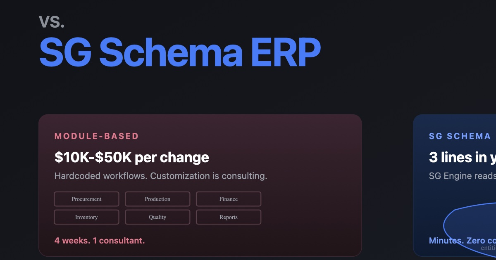

Every ERP vendor sells modules. Inventory module. Procurement module. Production module. Finance module. You buy the ones you need. You configure them within their limits. You go live.
There is another way to build an ERP. Instead of pre-built modules with predefined workflows, you start with the business itself. You write down what exists, what states things can be in, what rules apply. The system generates itself from that specification.
The first approach is module-based architecture. The second is spec-driven architecture. Here is why the difference matters.
How modules work
A module is a pre-built application for a generic version of a business process. The Procurement module assumes: create a purchase order, send it to a vendor, receive goods, match the invoice, pay. That workflow is hardcoded into the module.
The problem starts when your procurement does not work that way.
What if your purchase orders consolidate per vendor across multiple production jobs? That is a customization. What if your receiving process measures in cubic feet instead of units? Customization. What if your approval chain differs for first-time vendors versus repeat vendors? Customization.
Each customization costs $10,000 to $50,000. Each one makes the system harder to upgrade. After 10 customizations, you are running a forked version of the software that nobody at the vendor fully understands.
The module trap
Modules create a perverse incentive. The vendor wants you to buy more modules. You want each module to match your process. The gap between what the module does and what you need is the vendor's profit margin.
And here is what nobody says out loud: every module is a separate database structure with its own tables, its own logic, and its own assumptions. When you need data to flow from Procurement to Production to Finance, that flow has to be built. Often by a consultant. Often expensively. Cross-module consistency is not free. It is not even cheap.
How SG Schema architecture works
An SG Schema ERP does not have modules. It has a single specification of your business: the SG Schema.
The SG Schema defines what types of things exist (Sales Orders, Job Orders, Purchase Orders). What states each type can be in. What transitions are allowed. What rules must hold at each transition. What chain reactions fire when an event occurs.

The SG Schema does not contain application code. It is a machine-readable specification. SG Engine reads the SG Schema and generates the application, including forms, workflows, validations, dashboards, and APIs. Automatically.
Change the SG Schema, the application changes instantly.
The practical difference
In a module-based system, adding "QC approval before dispatch" means modifying the Production module and the Dispatch module and the interface between them. Three code changes. One consultant. $20,000. 4 weeks.
In an SG Schema system, adding "QC approval before dispatch" means: add a QC state to the production flow. Add a transition rule: cannot move to Dispatch unless QC state is Passed. Add a chain reaction: QC Passed makes the item available for Dispatch.
Three rows in the SG Schema. Zero code changes. Done in minutes.
Why modules keep winning (commercially)
Modules are easier to sell. They have names. They have feature lists. They have demo environments. A sales rep can walk you through the Procurement module in 20 minutes and check a box on your requirements list.
SG Schema systems are harder to demo because they do not have pre-built screens to show. SG Engine generates screens from your spec. The demo IS the deployment. That is why SimpleGrid's sales process starts with a working system built from your actual operation, not a generic walkthrough.
The test
Next time an ERP vendor presents their modules, ask this question: "If I need to add a business rule that spans two of your modules, how long does that take and what does it cost?"
If the answer involves consultants, change orders, and weeks, you are buying modules.
If the answer is "we add a few lines to the spec and it takes effect immediately," you are buying an SG Schema system.
SimpleGrid does not sell modules. We write your SG Schema. Your rules. Your language. Your operation.